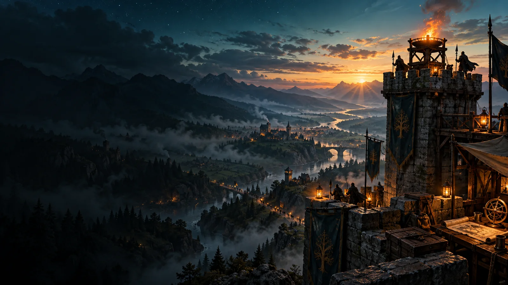
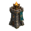
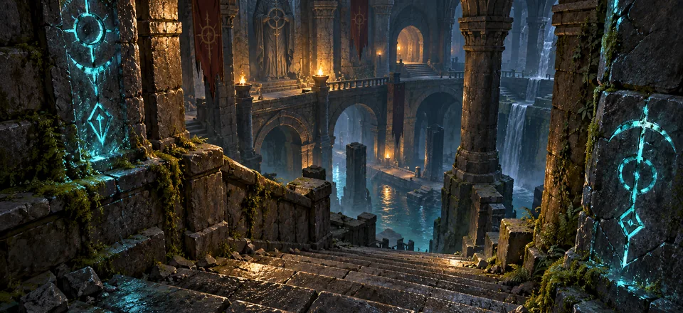

+4 na última Vigília
MUNDO PERSISTENTE · CICLO DE 6 HORAS
Quadro da Vigília
Estado da região, ofertas congeladas do ciclo e ações das guildas rivais.


VIGÍLIA 04 · EM ANDAMENTOFronteira de Ashen
As ofertas desta rodada permanecem estáveis até o fechamento. O mundo continuará a avançar quando você abrir a campanha novamente.
−3 por portal contido
Presença da sua guilda
Histórico próprio da guilda
MAPA DA CAMPANHA
Cinco regiões
A guilda atua na região natal, salvo convite durante rebelião ativa.
SNAPSHOT DA VIGÍLIA 04
Ofertas ativas
10 contratos, 3 masmorras e 1 chefe por região. Portal é oferta extra quando existir.
Ranks E–S indicam desafio. Nível, poder, chance, duração e recompensas vêm do template congelado; pesos de sorteio não aparecem ao jogador.
Contratos · 10
Patrulha do Portão
Grupo 1–2 · nível recomendado 4 · 25 minSegurança regional · ouro e XP
Rota dos Mercadores
Grupo 2–3 · nível 8 · 42 minContrato de proteção · madeira
Sombras no Bosque
Grupo 3 · nível 12 · 65 minRisco maior · materiais e XP
Escolta da Pedreira
Grupo 1–2 · nível 5 · 30 minMinério · influência
Relíquias da Ponte
Grupo 2 · nível 9 · 50 minExploração · loot possível
Mais contratos · 5
Guarda da Estrada Alta
Grupo 3 · nível 14 · 70 minSegurança · reputação
Caçada no Desfiladeiro
Grupo 2–3 · nível 10 · 55 minCouro · ouro
Mensageiro da Guilda
Grupo 1 · nível 3 · 20 minOuro · XP
Fronteira em Alerta
Grupo 4 · nível 18 · 90 minRisco elevado · insígnia
Colheita Protegida
Grupo 3 · nível 13 · 60 minRecurso e segurança
Masmorras · 3
Disponível
Cripta das Lanternas · Rank D
Grupo 3 · nível 9 · chance e loot no detalhe
Disponível
Galerias Profundas · Rank C
Grupo 4 · nível 14
Requisito pendente
Abismo do Vigia · Rank B
Grupo 5 · poder recomendado 6.200
Chefe · 1

Disponível
Coroa de Pedra · Rank C
Grupo recomendado 5 · risco e loot exibidos antes da partida.
Portais dimensionais surgem como conteúdo extra e não substituem as três masmorras regulares.
RIVAIS CPU · ESTA CAMPANHA
Ranking regional
Comparação persistente; influência, reputação e vitórias têm papéis distintos.
- Sentinelas do Norte Forte · priorizou patrulhas1.240 pts
- Guilda da Aurora Sua guilda · contratos e coleta987 pts
- Companhia da Ponte Média · explorou masmorras702 pts
- Brasa Errante Recém-criada315 pts
- Filhos do Cedro Recém-criada280 pts
CICLOS ENCERRADOS
Relatório da Vigília
O histórico explica causas e preserva os resultados de ciclos anteriores.
Rotas estabilizadas
Segurança +4, ameaça −3 e influência +2. Causas registradas por guilda e atividade.
O vale resistiu
O resultado permanece consultável, sem repetir recompensa ou reprocessar o ciclo.